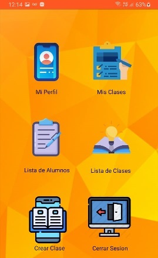
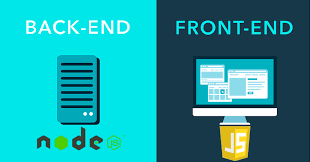
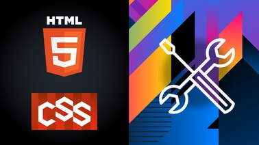
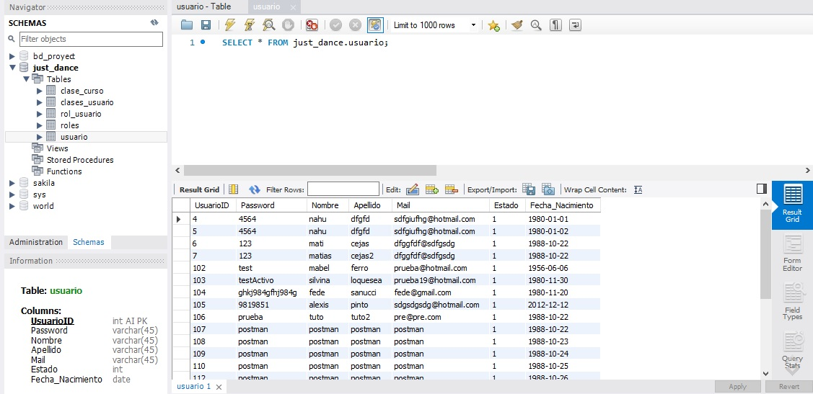

Front
01
Android
Proyecto "Just Dance With Me" realizado en el año 2020, en java y kotlin.

Front
Back
02
Javascript
Se utlizó javascript tanto para front-end como back-end, en los años 2020-2021.

Front
03
CSS-SASS
Gracias a lenguaje de CSS y su procesador SASS/SCSS pude aprender muchisimos estilos y diseños.

Back
04
SQL
Con SQL he podido desarrollar mi potencial en mis conocimientos en cuanto a bases de datos y su manejo.

-
Android
Este es un proyecto realizado en java como kotlin para fines educativos, el mismo se termino de manera exitosa teniendo su base de datos y backend tambien realizados por mi. Fue desarrollado con la necesidad de ayudar a gestionar las inscripciones a clases y cursos de una escuela de danzas, ya sea para alumnos o administrativos de la misma escuela.
 -
Javascript
Con Javascript he logrado renifar las páginas con mis estilos, efectos y animaciones, asi como tambien su funcionalidad, en cuanto a sus validaciones manejos de datos y pegadas a las API de manera exitosa. Ademas, pude desarrollar con NodeJs grandes avances con el proyecto "Just Dance With Me".
 -
CSS - SASS/SCSS
Gracias al lenguaje de CSS y sus procesadores SASS y SCSS pude ampliar mis diseños, estilos y conocimientos, asi como también, aprender grandes cantidades de herramientas y frameworks para completar y cumplir las necesidades de los clientes.
 -
Base de Datos
Con SQL logré desarrollar varias bases de datos para proyectos tantos grandes como chicos, este tipo de leguanje relacional me ayudo de manera considerable a administrar y manejar todo tipo de datos necesarios para el producto, ya sea páginas web como aplicaciones de smartphone.
